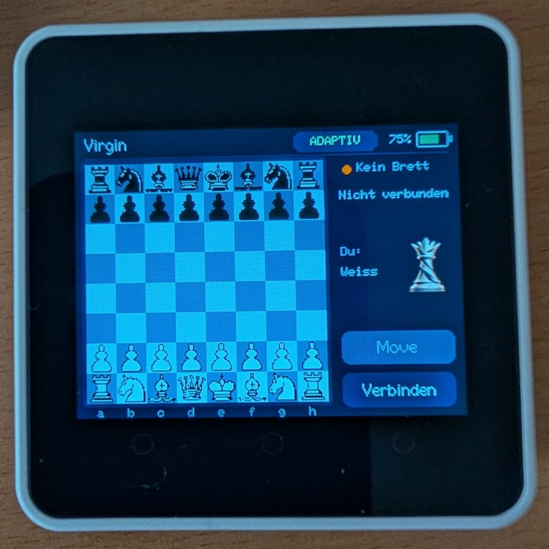
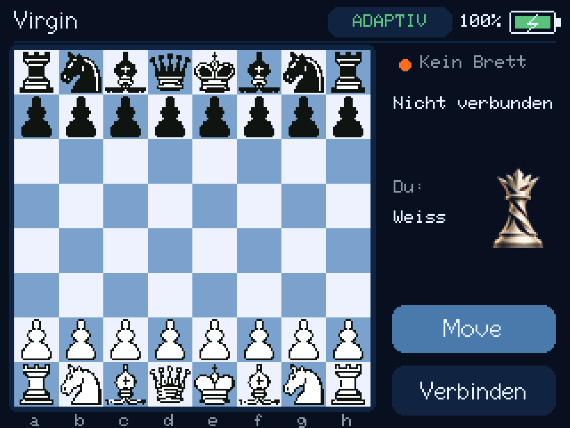

The engine is on board
The Virgin engine runs in the adaptive mode directly on the Core2’s ESP32: a 1 MiB transposition table in PSRAM, a search of up to 20 plies and a budget of 2.5 seconds per move. No network files, no phone, no computer.
ESP32 · stand-alone · open source
A chess computer built on the M5Stack Core2. The engine runs on the little device itself, in the adaptive mode, so you need no phone, no PC and no Internet to play. Your moves come from an electronic chessboard over Bluetooth; the computer’s answer appears on the screen and lights up the squares on your board.
A queen in six moods shows how the game stands, and on a Tabutronic Spectrum the move LEDs change colour with the evaluation: blue when balanced, towards green when you are ahead and towards red when you are behind.
Status: a working prototype. It has been played with a Chessnut GO. The other boards are implemented, but a test with the real board on the Core2 is still pending; see the table below.

What it does
Everything needed to play sits on the device.
The Virgin engine runs in the adaptive mode directly on the Core2’s ESP32: a 1 MiB transposition table in PSRAM, a search of up to 20 plies and a budget of 2.5 seconds per move. No network files, no phone, no computer.
Connect your e-board by Bluetooth with one tap, play your moves on the real pieces, and carry out the computer’s reply on the board. The game continues once the whole resulting position has been recognised.
The engine’s move appears on the display at once, and on boards with LEDs the squares to move are marked, so you never have to look away from the board.
Tap Move on your turn and the computer takes your side: it plays White, you play Black, and the view turns. While the engine is thinking, the key ends the search early.
The logo queen changes in six steps from radiant to lightning and fire, always from your point of view, even when you play Black. A new game and a draw put her in the neutral state; a mate shows the win or the loss.
On a Spectrum the move and correction LEDs take the colour of the evaluation, with a blue correction, so a balanced position looks blue and not almost white.
The screen shows the search depth, the score from White’s point of view and the first moves of the main line while the engine is working.
Merida pieces on a board drawn from the PSRAM frame buffer. Only the sidebar is redrawn during analysis, so the chessboard never flickers.
A horizontal battery in the corner shows the percentage and a bolt while charging. It turns red at 20 percent or less and is refreshed every five seconds.
Look and feel
320 × 240 pixels, enlarged here. The texts are in German for now.


Left to right: you are well ahead, a little ahead, balanced, a little behind, clearly behind, lost. The queen has no colour bar and no animation. During a search she keeps the last finished state.
Hardware
Honest status of each board family on the Core2.
| Board | Status |
|---|---|
| Chessnut | Found by its name, whatever the model suffix. A Chessnut GO has been connected and real moves played. Other models have not been tested one by one. |
| Millennium via ChessLink | Bluetooth protocol implemented. A real board test on the Core2 is still to do. |
| Certabo | Bluetooth (Nordic UART), learning of the 34 pieces and single-colour LEDs implemented. A real board test is still to do. |
| Tabutronic Spectrum | Bluetooth (Nordic UART), learning of the pieces and RGB LEDs implemented. A real board and colour test is still to do. |
Certabo and Spectrum need a compatible Bluetooth-to-UART bridge with the Nordic UART service, such as the eChessGw gateway. Plugging their USB cable straight into the Core2 is not supported. Boards that only report which squares are occupied are not a replacement for a board that recognises the pieces.
M5Chess is an independent project. It is not affiliated with, endorsed by or sponsored by the makers of the supported boards. All product names are trademarks of their respective owners.
How to play
The screen does not move pieces by touch, games are not stored, and there is no automatic reconnection: after a lost connection, tap Connect again. The playing strength of the engine on this chip has not been measured.
Make your own
All sources and the exact library versions are in the repository.
git clone --recurse-submodules https://github.com/parlue/M5Chess.git
cd M5Chess
python -m pip install -r requirements.txt
python -m platformio run -d esp32_core2
python -m platformio run -d esp32_core2 -t upload --upload-port COM17Replace COM17 with the port of your Core2. The first build downloads the toolchain and needs the Internet; playing does not. The build uses PlatformIO 6.2.0, espressif32@6.8.1 and ESP-IDF 5.3. The full guide, the Certabo and Spectrum learning gesture and the troubleshooting tips are in the
English documentation ↗.
Good to know